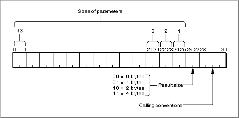
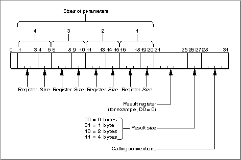
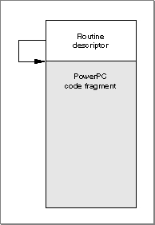
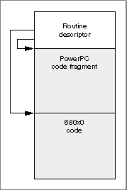

Using the Mixed Mode Manager
You can use the Mixed Mode Manager to specify the procedure information for a routine, create routine descriptors, and execute the code referenced by a universal procedure pointer. Typically, you'll callNewRoutineDescriptorto create a routine descriptor andCallUniversalProcto execute the code described by a routine descriptor. You can dispose of routine descriptors you no longer need by calling theDisposeRoutineDescriptorfunction.Remember that if you are compiling code for the 680x0 environment, you don't need to worry about creating, calling, or disposing of routine descriptors. For 680x0 code, the compiler variable
USESROUTINEDESCRIPTORSis set tofalse(the default setting). Any calls in your source code to theNewRoutineDescriptorfunction are replaced by the code address passed as a parameter toNewRoutineDescriptor. Similarly, any calls toDisposeRoutineDescriptorare simply removed.
- Note
- Your development environment sets the
USESROUTINEDESCRIPTORvariable to the value appropriate for the kind of code you are compiling, You don't need to set or reset this variable.Specifying Procedure Information
The primary task of the Mixed Mode Manager is to convert routine parameters between the 680x0 and PowerPC environments. The parameter passing conventions in the PowerPC environment are identical for all routines, so you'll need to specify the calling conventions only for 680x0 routines.In the Macintosh Operating System, there are five basic kinds of calling conventions:
In addition to these five basic kinds of calling conventions, there exist a number of cases that the Mixed Mode Manager treats specially. For example, an ADB service routine is passed information in registers A0, A1, A2, and D0.
- Pascal routines with the parameters passed on the stack
- C routines with the parameters passed on the stack
- routines with the parameters passed in registers
- dispatched Pascal or C routines with the selector in a register and the parameters on the stack
- dispatched Pascal routines with the selector and the parameters on the stack
The Mixed Mode Manager uses a long word of type
ProcInfoTypeto encode a routine's procedure information, which contains essential information about the calling conventions and other features of a routine. You need to specify procedure information when you create a new routine descriptor by calling theNewRoutineDescriptorfunction.typedef unsigned long ProcInfoType;The lower-order 4 bits of the procedure information encode the routine's calling conventions. You specify calling conventions using these constants:
- IMPORTANT
- In all likelihood, you do not need to read the remainder of this section, which explains in detail the structure of the
ProcInfoTypelong word and shows how to create custom procedure information. The universal interface files define procedure information for each universal procedure pointer used by the system. For example, the interfaces define the constant uppGrowZoneProcInfo for you to use when specifying
the procedure information for a grow-zone function. You need to create procedure information only for routines not defined in the programming interfaces. You can probably skip to the section "Using Universal Procedure Pointers" on page 2-21.
enum { /*calling conventions*/ kPascalStackBased = (CallingConventionType)0, kCStackBased = (CallingConventionType)1, kRegisterBased = (CallingConventionType)2, kThinkCStackBased = (CallingConventionType)5, kD0DispatchedPascalStackBased = (CallingConventionType)8, kD0DispatchedCStackBased = (CallingConventionType)9, kD1DispatchedPascalStackBased = (CallingConventionType)12, kStackDispatchedPascalStackBased = (CallingConventionType)14, kSpecialCase = (CallingConventionType)15 };For example, a routine that passes its parameters on the stack according to normal C language conventions would have the rightmost 4 bits of the procedure information set to 0001 (hexadecimal 0x00000001).Except for routines having calling conventions of type
kSpecialCase, the 2 bits to the left of the calling convention bits encode the size of the result returned by the routine. You can access those bits using a constant:#define kResultSizePhase 4The Mixed Mode Manager provides four constants and a macro that you can use to set a routine's result size in its procedure information.enum { kNoByteCode = 0, kOneByteCode = 1, kTwoByteCode = 2, kFourByteCode = 3 }; #define RESULT_SIZE(sizeCode) \ ((ProcInfoType)(sizeCode) << kResultSizePhase)Except as already noted, every set of procedure information uses its rightmost 6 bits to specify the calling conventions and result size information. The calling conventions, which take up the rightmost 4 bits, determine how the remaining bits of a routine's procedure information are interpreted. For example, if the rightmost 4 bits contain
the valuekCStackBasedor the valuekPascalStackBased, then the remaining bits encode the sizes and number of the parameters passed on the stack. Figure 2-6 shows how the Mixed Mode Manager interprets the procedure information for a stack-
based routine.Figure 2-6 Procedure information for a stack-based routine

Once again, the Mixed Mode Manager provides a set of constants and macros that you can use to specify a stack-based routine's procedure information.#define kStackParameterPhase 6 #define kStackParameterWidth 2 #define STACK_ROUTINE_PARAMETER(whichParam, sizeCode) \ ((ProcInfoType)(sizeCode) << (kStackParameterPhase + \ (((whichParam) - 1) * kStackParameterWidth)))As you can see, the maximum number of stack-based parameters whose sizes you can specify using a variable of type ProcInfoType is 13. The procedure information encoding used by the Mixed Mode Manager places limits on the number of specifiable register-based parameters as well. See Table 3-1 at the end of this section (page 2-20) for a complete list of these limits.The new application programming interface files described earlier (on page 2-6) include constants that define procedure information for each type of routine to which you might need to create a universal procedure pointer. For example, the interface file Memory.h includes these definitions:
enum { uppGrowZoneProcInfo = kPascalStackBased | RESULT_SIZE(SIZE_CODE(sizeof(long))) | STACK_ROUTINE_PARAMETER(1, SIZE_CODE(sizeof(Size))), uppPurgeProcProcInfo = kPascalStackBased | STACK_ROUTINE_PARAMETER(1, SIZE_CODE(sizeof(Handle))) };A grow-zone function follows normal Pascal calling conventions, returns a value that is 4 bytes long, and takes a single 4-byte parameter on the stack. A purge-warning procedure follows normal Pascal calling conventions, returns no value, and takes a single 4-byte parameter on the stack.The Mixed Mode Manager provides similar constants and macros for specifying procedure information for register-based routines.
#define kRegisterResultLocationPhase \ (kCallingConventionWidth + kResultSizeWidth) #define kRegisterResultLocationWidth 5 #define kRegisterParameterPhase \ (kCallingConventionWidth + kResultSizeWidth + \ kRegisterResultLocationWidth) #define kRegisterParameterWidth 5 #define kRegisterParameterWhichPhase 2 #define kRegisterParameterSizePhase 0 #define kDispatchedSelectorSizeWidth 2 #define kDispatchedSelectorSizePhase \ (kCallingConventionWidth + kResultSizeWidth) #define kDispatchedParameterPhase \ (kCallingConventionWidth + kResultSizeWidth + \ kDispatchedSelectorSizeWidth) #define REGISTER_RESULT_LOCATION(whichReg) \ ((ProcInfoType)(whichReg) << kRegisterResultLocationPhase) #define REGISTER_ROUTINE_PARAMETER(whichParam, whichReg, sizeCode) \ ((((ProcInfoType)(sizeCode) << kRegisterParameterSizePhase) | \ ((ProcInfoType)(whichReg) << kRegisterParameterWhichPhase)) << \ (kRegisterParameterPhase + (((whichParam)- 1) * kRegisterParameterWidth)))For example, Figure 2-7 shows the arrangement of the procedure information for a register-based routine.Figure 2-7 Procedure information for a register-based routine

The register fields use the following constants to encode 680x0 register information:enum { /*680x0 registers*/ kRegisterD0 = 0, kRegisterD1 = 1, kRegisterD2 = 2, kRegisterD3 = 3, kRegisterD4 = 8, kRegisterD5 = 9, kRegisterD6 = 10, kRegisterD7 = 11, kRegisterA0 = 4, kRegisterA1 = 5, kRegisterA2 = 6, kRegisterA3 = 7, kRegisterA4 = 12, kRegisterA5 = 13, kRegisterA6 = 14, kCCRegisterCBit = 16, kCCRegisterVBit = 17, kCCRegisterZBit = 18, kCCRegisterNBit = 19, kCCRegisterXBit = 20 };The Mixed Mode Manager also provides constants and macros to specify the procedure information for stack-based routines that take a register-based selector and for stack-
- Note
- The result size should be specified as 0 for results returned
in any of the CCR registers.
based routines that take a stack-based selector.As noted earlier, there are limits on the number of parameters that a procedure information can describe. Table 3-1 lists the available calling conventions and the maximum number of specifiable parameters and selectors for each convention.
- Note
- See "Procedure Information" beginning on page 2-27 for a complete description of the constants you can use to specify a routine's procedure information. See "C Language Macros for Defining Procedure Information" on page 2-50 for a complete list of the Mixed Mode Manager macros you can use to create procedure information.
In general, these limitations should not affect you. There are, however, a very few cases in which the documented behavior of a routine prevents it from being implemented in native PowerPC code. For example, the low-level .ENET driver routines
- IMPORTANT
- The input parameters can be passed in any of the registers D0-D3 and A0-A3; the output parameter can be returned in any register.
ReadRest
andReadPacketreturn information in several registers. As a result, they cannot be implemented natively. (Because these routines are typically called only in code where speed of execution is critical, it's not likely that you would want to incur the overhead of a mode switch by writing native callbacks to the .ENET driver.)Using Universal Procedure Pointers
When you call theNewRoutineDescriptororNewFatRoutineDescriptorfunction to create a routine descriptor, the Mixed Mode Manager calls the Memory Manager to allocate a nonrelocatable block in the current heap in which to store the new routine descriptor. Eventually, you might want to dispose of the space occupied by the routine descriptor; you can do this by calling theDisposeRoutineDescriptorfunction.In general, there are two ways you'll probably handle this allocation and deallocation. By far the easiest method is to allocate in your application's heap, at application initialization time, a routine descriptor for each routine whose address you'll need to pass elsewhere. For example, if your application calls
TrackControlwith a custom action procedure, you can create a routine descriptor in the application heap when your application starts up, as shown in Listing 2-2.Listing 2-2 Creating global routine descriptors
UniversalProcPtr myActionProc; myActionProc = NewRoutineDescriptor((ProcPtr)MyAction, uppControlActionProcInfo, GetCurrentISA());Later you would callTrackControllike this:TrackControl(myControl, myPoint, myActionProc);The routine descriptor pointed to by the global variable myActionProc remains allocated until your application quits, at which time the Process Manager reclaims
all the memory in your application heap.The other way to handle routine descriptors is to create them as you need them and then dispose of them as soon as you're finished with them. This practice would be useful for routines you don't call very often. Listing 2-3 shows a way to call the
- Note
- If you don't want
TrackControlto call an application-defined action procedure, you must passNULLin place of myActionProc. In that case, you don't need to callNewRoutineDescriptor.ModalDialogfunction to display a rarely used modal dialog box.Listing 2-3 Creating local routine descriptors
void DoAboutBox (void) { short myItem = 0; DialogPtr myDialog; UniversalProcPtr myModalProc; myDialog = GetNewDialog(kAboutBoxID, NULL, (WindowPtr) -1L); myModalProc = NewRoutineDescriptor((ProcPtr)MyEventFilter, uppModalFilterProcInfo, GetCurrentISA()); while (myItem != iOK) ModalDialog(myModalProc, &myItem); DisposeDialog(myDialog); DisposeRoutineDescriptor(myModalProc); }If you decide to allocate and dispose of routine descriptors locally, make sure that you don't dispose of a routine descriptor before it's actually used by the Operating System. (This could happen, for instance, if you pass a universal procedure pointer for a comple-
tion routine and then exit the local procedure before the completion routine is called.)
- Note
- You should call
DisposeRoutineDescriptoronly to dispose routine descriptors that you created using eitherNewRoutineDescriptororNewFatRoutineDescriptor.Using Static Routine Descriptors
Instead of allocating space for routine descriptors in your application heap (as described in the previous section), you can also create routine descriptors on the stack or in your global variable space by using macros supplied by the Mixed Mode Manager. Most likely, you'll create a descriptor on the stack when you need to use a routine descriptor for a very short time. For example, you could use the function defined in Listing 2-4 instead of the one defined in Listing 2-3.Listing 2-4 Creating static routine descriptors
void DoAboutBox (void) { short myItem = 0; DialogPtr myDialog; RoutineDescriptor myRD = BUILD_ROUTINE_DESCRIPTOR(uppModalFilterProcInfo, (ProcPtr)MyEventFilter); UniversalProcPtr myModalProc; myDialog = GetNewDialog(kAboutBoxID, NULL, (WindowPtr) -1L); myModalProc = @myRD; while (myItem != iOK) ModalDialog(myModalProc, &myItem); DisposeDialog(myDialog); }As you can see, theDoAboutBoxfunction defined in Listing 2-4 uses the macroBUILD_ROUTINE_DESCRIPTORto create a routine descriptor on the stack and then passes the address of that routine descriptor to theModalDialogprocedure. Because the routine descriptor is created on the stack, there is no need to dispose of it before exiting theDoAboutBoxfunction.You can create a routine descriptor in your application's global data area by using the
BUILD_ROUTINE_DESCRIPTORmacro as follows:static RoutineDescriptor myRD = BUILD_ROUTINE_DESCRIPTOR(uppModalFilterProcInfo, (ProcPtr)MyEventFilter);This line of code creates a routine descriptor as part of the application global variables. The advantage of this method is that you don't have to callNewRoutineDescriptorto allocate a routine descriptor in your heap.The C language macro
BUILD_ROUTINE_DESCRIPTORis defined in Listing 2-5.Listing 2-5 Building a static routine descriptor
#define BUILD_ROUTINE_DESCRIPTOR(procInfo, procedure) \ { \ _MixedModeMagic, /*mixed-mode A-trap*/ \ kRoutineDescriptorVersion, /*version*/ \ kSelectorsAreNotIndexable, /*RD flags: not dispatched*/ \ 0, /*reserved1*/ \ 0, /*reserved2*/ \ 0, /*selector info*/ \ 0, /*number of routines*/ \ { /*it's an array*/ \ { /*it's a structure*/ \ (procInfo), /*the procedure info*/ \ 0, /*reserved*/ \ kPowerPCISA, /*ISA*/ \ kProcDescriptorIsAbsolute | /*flags: absolute address*/ \ kFragmentIsPrepared | /*it's prepared*/ \ kUseNativeISA, /*always use native ISA*/ \ (ProcPtr)(procedure), /*the procedure*/ \ 0, /*reserved*/ \ 0, /*not dispatched*/ \ }, \ }, \ }The Mixed Mode Manager also defines a C language macro that you can use to
- IMPORTANT
- You should use the
BUILD_ROUTINE_DESCRIPTORmacro only to create a routine descriptor that describes a nondispatched routine
that exists as PowerPC code.
create static fat routine descriptors. See the Mixed Mode Manager interface file for
the definition of theBUILD_FAT_ROUTINE_DESCRIPTORmacro.Executing Resource-Based Code
As you've seen earlier in this book (in the section "Executable Resources" on page 1-31), you can create executable resources that contain PowerPC code to serve as accelerated versions of 680x0 code resources. The accelerated resource is simply a PowerPC version of the 680x0 code resource, prefixed with a routine descriptor for the code contained in the resource. The routine descriptor is necessary for the Mixed Mode Manager to know whether it needs to change modes in order to execute the code. The routine descriptor also lets the Mixed Mode Manager know whether it needs to call the Code Fragment Manager to prepare the fragment. Figure 2-8 shows the structure your code-containing resources should have.Figure 2-8 General structure of an executable code resource

TheprocDescriptorfield of the routine record--contained in theroutineRecordsfield of the routine descriptor--should contain the offset from the beginning of the resource (that is, the beginning of the routine descriptor) to the beginning of the execut-
able code fragment. In addition, the routine flags for the specified code should have thekProcDescriptorIsRelativebit set, indicating that the address is relative, not absolute. If the code contained in the resource is PowerPC code, you should also set thekFragmentNeedsPreparingbit.It's also possible to create "fat" code-bearing resources, that is, resources containing both 680x0 and PowerPC versions of some routine. Figure 2-9 shows the general structure of such a resource.
Figure 2-9 General structure of a fat resource

In this case, the routine descriptor contains two routine records in itsroutineRecordsfield, one describing the 680x0 code and one describing the PowerPC code. As with any code-bearing resource, theprocDescriptorfield of each routine record should contain the offset from the beginning of the resource to the beginning of the appropriate code. The flags for both routine records should have thekProcDescriptorIsRelativeflag set, and the routine flags for the PowerPC routine record should have thekFragmentNeedsPreparingflag set.The MPW interface file
MixedMode.rprovides Rez templates that you can use to create the accelerated resource shown in Figure 2-8 or the fat resource shown in Figure 2-9.
- WARNING
- Do not call accelerated resources at interrupt time unless you are certain that the resource has already been loaded into memory, locked, and prepared for execution. If the resource containing the code hasn't
been prepared, the Code Fragment Manager will attempt to do so,
and thereby allocate memory. (Memory allocation is not allowed at
interrupt time.)